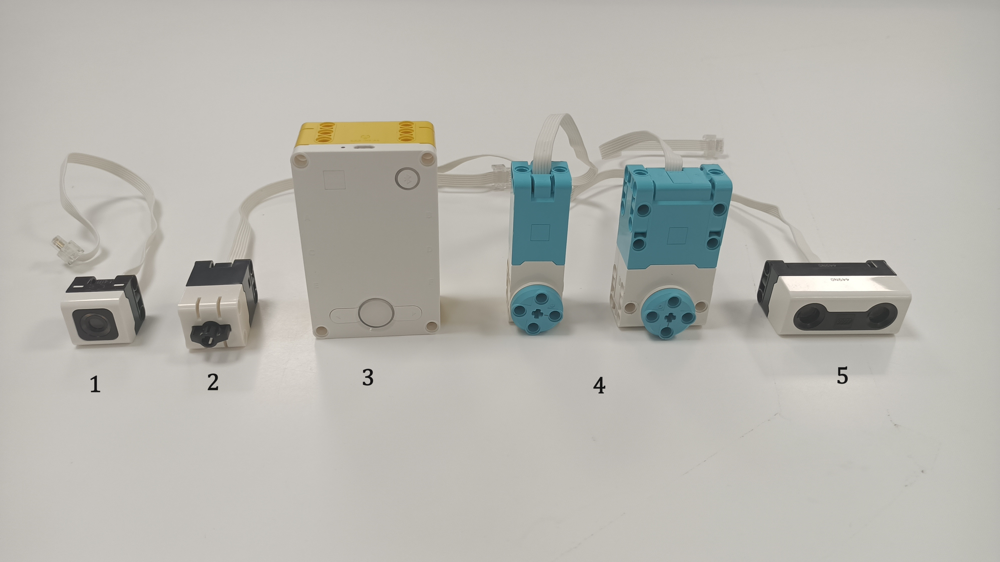

Bases de la
Robotique
Pour se déplacer dans leur environnement, les robots ont besoin de divers
capteurs pour acquérir les données et agir en conséquence.
Introduction
Lors de ce projet, j'ai pu apprendre à créer un robot (à partir de pièces préfabriquées) ainsi qu'à utiliser les divers capteurs à ma disposition pour traiter les données reçues et le faire évoluer dans son environnement.
Les pièces
Les composants essentiels

Ci-dessus se trouve les composants les plus importants de mon robot :
- Capteur de couleur : Peut capter jusqu'à 8 couleurs.
- Capteur de toucher : Mesure la force jusqu'à 10 Newtons.
- Microcontrôleur : Équipé d'une centrale inertielle, exécute les algorithmes, active le mouvement etc.
- Moteur : Met en mouvement le robot (est généralement relié aux roues/engrenages).
- Capteur de distance : Mesure la distance jusqu'à 2 mètres par l'intermédiaire d'ultrasons.
Engrenages et composants divers
Les engrenages sont utilisés pour transférer le mouvement des moteurs vers des parties de la structure éloignées. Les différents éléments légos présents dans l'image servent, quant à eux, à assembler la structure complète du robot.
Exemple
 Ci-contre, vous trouverez un exemple d'utilisation des composants mentionnés précédemment sur un robot.
Ci-contre, vous trouverez un exemple d'utilisation des composants mentionnés précédemment sur un robot.
Il est équipé d'un capteur de distance, de bras mécaniques reliés à deux moteurs distincts, ainsi que d'un capteur de couleur. Dans cette configuration, le capteur de distance détecte un objet dès qu'il se trouve à une distance inférieure à 4cm, déclenchant ainsi le mouvement des bras. Le capteur de couleur, placé à l'avant et orienté vers le bas, est utilisé pour suivre un tracé.
Le tout permet au robot d'attraper un objet qui se trouve sur son chemin et de le garder tout en étant en mouvement.
Projet final et récapitulatif
Le projet final avait pour objectif d'appliquer les connaissances acquises tout au long du projet à travers une épreuve de fin de séquence.
Plus spécifiquement, l'épreuve finale consistait en un parcours que le robot devait suivre pour atteindre un point B. Sur ce parcours se trouvaient plusieurs obstacles, absence de marquage, vitres ; il fallait concevoir le robot idéal pour les résoudre.
Comme nous étions plusieurs groupes (de 2) à concevoir un robot, cela a conduit à des situations intéressantes où nos robots ont interagi de manière involontaire, comme le montre la vidéo.
La réalisation de ce projet a constitué une immersion enrichissante dans les principes de physique et d'ingénierie, approfondissant ma compréhension des mécanismes tels que l'utilisation spécifique des engrenages, des capteurs, des moteurs, et bien d'autres. Par ailleurs, il m'a initié à une approche réfléchie et stratégique pour adapter un robot en vue d'atteindre des objectifs spécifiques.